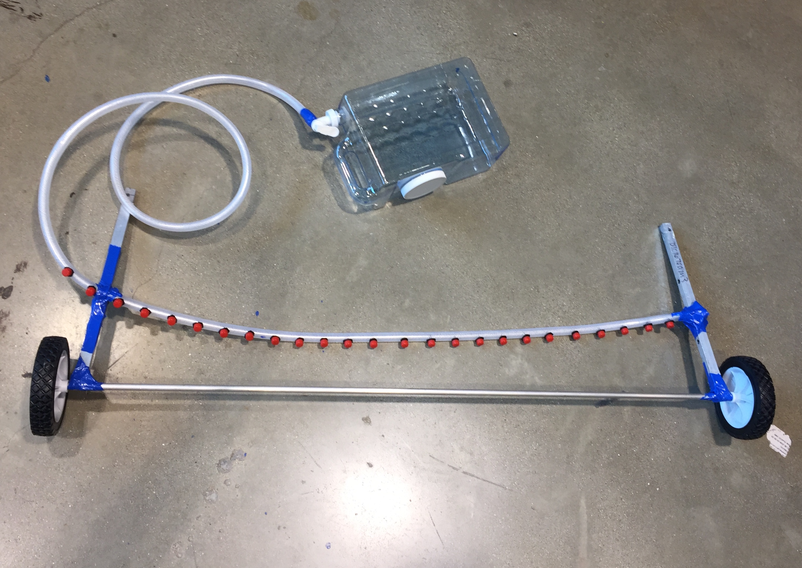
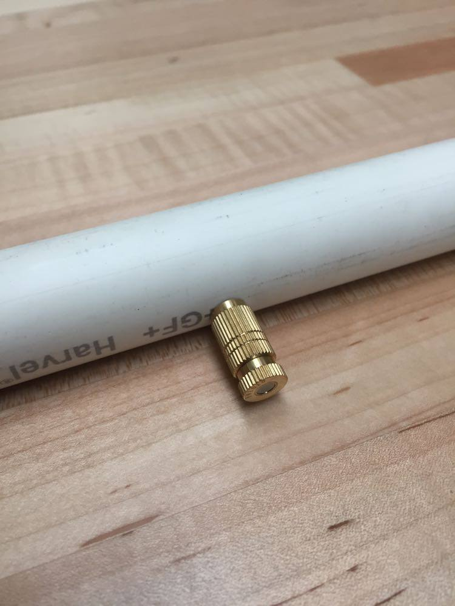
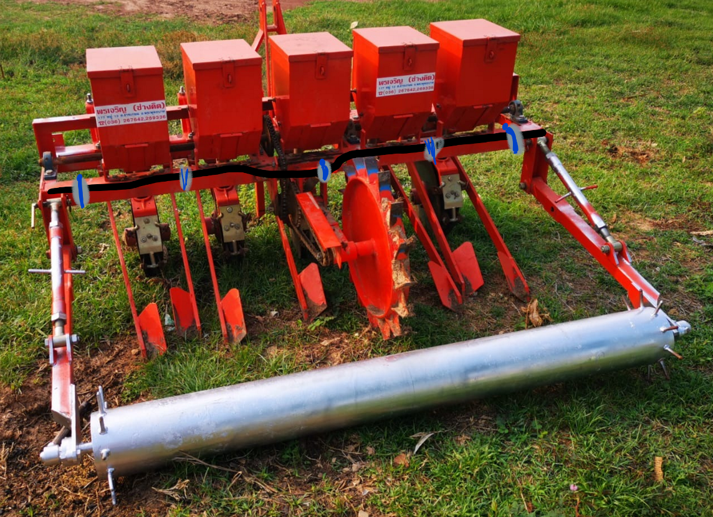

Organic Fertilizer Application
|
Interdisciplinary Design Projects / Winter-Spring 2020 |
 |
|---|
|
Interdisciplinary Design Projects / Winter-Spring 2020 |
|
|---|
Raitong Organics Farm in Sisaket, Thailand has been seeking assistance in reimagining their fertilizing process. Raitong is a leading organic farm in its area. Yet, they continue to struggle with an effective solution for their fertilizer application process. Currently, aging farmers carry heavy backpacks full of the organic fertilizer solution and can only apply during the night. Applying at night puts the farmers at risk of snakes and other dangers.
Currently, Raitong uses a tractor attachment to carry out all of its other planting processes. The tractor goes through the plot once to seed. Then, farmers go through the plot again at night to fertilize the seeds, and the tractor has to go through once again to roll out the soil. To simplify the process, our team decided to develop a design to be added to the tractor attachment, so that all three steps could be completed at once. As the fertilizing needs to occur immediately after planting from the seedboxes but before rolling out the soil, we will be clamping our mechanism to the frame between the two steps of the attachment, like in the sketch below.
Additionally, since this is an aerobic mixture which can only last up to 1-2 hours after being aerated, we are incorporating an aerating mechanism to the tank, which we hope to use an aquarium air pump for. In order to make it easy to maintain in a rural area, our group explored designs to keep the dispensing mechanism low-tech. Below is our first proof-of-concept mockup, where we attached dripper nozzles throughout the length of the attachment mockup.
Through further conversations with our client, precision became an important consideration. The fertilizer had to land directly on top of the seeds, rather than just in the soil. This meant switching from dripping nozzles to spraying nozzles, which would give a more consistent coverage throughout the length of the attachment. We found that there were dripping nozzles that could screw into a threaded PVC pipe, or simply quick-connect to a flexible tube. Furthermore, although we were worried about supplying a pressure high enough for spraying nozzles, we found many that would work with a pressure equivalent to that from a garden hose. We are currently testing such nozzles to observe flow rate and whether it could match our specifications.
In order to supply a certain pressure for the nozzles, we determined that we needed a pump, either PTO (power take-off) or electric. While PTO pumps were very common, we found through research that PTO pumps had more complications. PTO pumps may slow down together with the speed of the tractor, and using one could potentially be dangerous given the high torque. Additionally, the pressure that PTO pumps provided would be too high for our use and could potentially blow the seeds off the ground. We found a number of electric pumps for a 12V tractor battery, and of a variety of pressures within our specifications.
The next question was whether our piping was to be rigid or flexible. A rigid pipe was initially desirable as it would prevent twisting and would keep all nozzles pointing straight down. However, we later got an image from our client that showed a large chain in the middle, where we planned to put the pipe. A flexible tube was later chosen to avoid the chain, but still allow for that even lateral coverage. This also greatly simplified our design for the attachment, since we could easily use hose clamps.
As we are approaching the final weeks of our design process, we are working on using our calculations and testing data to select the specific type of piping, tank, and pump we will need. Although we began the project hoping to deliver the full prototype to Raitong Organics Farm, we have shifted to preparing a detailed roadmap for our client to follow instead, given the pandemic, and sending any products that may not be easily found in Thailand.